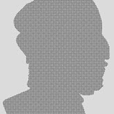
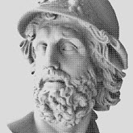
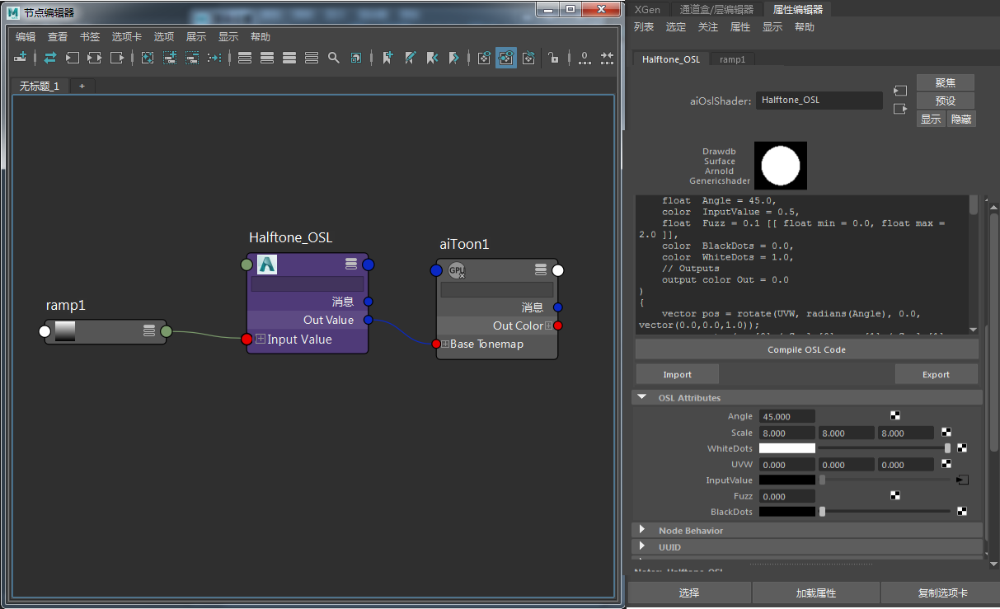

将半色调 OSL 着色器与卡通着色器结合使用
本简短教程介绍如何使用连接到卡通着色器的 OSL 着色器创建半色调着色效果。非常感谢 Zap Andersson 为本教程提供的此着色器和帮助。
有关半色调 OSL 着色器，请单击此处。
- 首先，从上面的链接下载该半色调着色器。
- 为模型指定卡通着色器。
- 创建一个 OSL 着色器，并在其中导入/编译半色调 OSL 着色器。编译后，您应该会在该 OSL 着色器中看到以值和滑块呈现的半色调 OSL 属性。
- 将该 OSL 着色器连接到卡通着色器的“基础色调映射”(Base Tonemap)属性。
- 可以通过将黑白渐变 (U/V) 连接到该半色调 OSL 着色器的输入值来控制半色调着色效果。
|
|
|  |
 |
| 未使用渐变 |
渐变 -> 输入半色调值 |
就这么简单！快去体验使用不同缩放值和渐变创建不同效果的乐趣吧。
有关场景文件，请单击此处。
